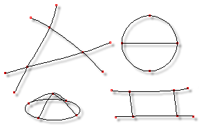

What Defines a Surface?
What Defines a Surface?
As you create and attach splines, an object will take form, and as the complexity increases, so will surface ambiguities. Surface ambiguities occur when connected control points can be either filled by a patch or left open. For simplicity and convenience, the computer will decide which connected control points define patches consistent with the rules for creating patches (see below).

Patches
When you have an area that you wish to cover with patches, you may have to add additional splines to form closed areas. Simply add a new spline, then attach each end to existing control points in the area to be covered. The curvature of the new spline may need to be adjusted to accommodate the shape of the surface.
The rules for creating patches are as follows:
1. All open and closed splines when extruded have patches on the extruded sides.
1. All open and closed splines when lathed have patches on the lathed sides.
1. Any closed combination of three or four control points define a patch, UNLESS all three or four control points are in the same spline. This is to minimize unwanted interior patches.